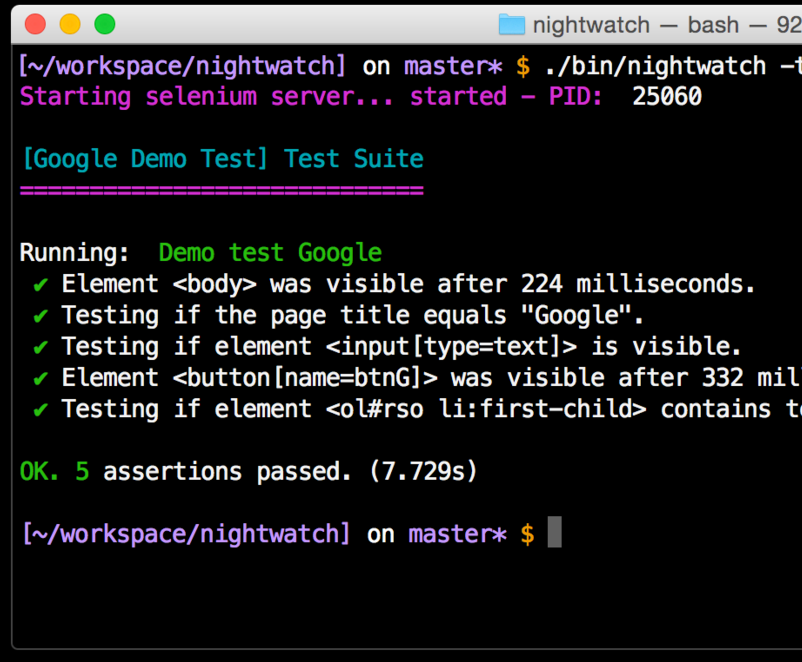

Flow
static type checker for JavaScript
Mapbox Studio
our project
250+ components, complex reducers,
complex interactions. in production
Static Analysis
Making judgments about source code and its behavior
without actually running the source code.
Type Checking
Confirms that you provide the right arguments and use
operators with compatible types.
Philosophy
Rule of Repair: When you must fail,
fail noisily and as soon as possible.
// crashes sometimes
for (var i in j)
try {
var result = JSON.parse(j[i]);
} catch (e) {
console.warn('idk lol');
}
But we usually follow the rule of repair
Regardless of whether we call it that
Linters move syntax errors from
the test stage to authoring stage
Unit tests move logic errors from
the production stage to test stage
Integration tests move logic errors from
the QA stage to test stage

So we already do the rule of repair! The trick
is thinking of failure on the time axis.
Flow detects type errors
before code runs.
// js has types
typeof '' === 'string'
typeof {} === 'object'
typeof 1 === 'number'
// javascript often
// implicitly converts
// types
> 'number ' + 5
'number 5'
> 5 == '5'
true
JavaScript type comparison table omitted
Most of the things people joke about in JS like type comparison,
'crazy' floating point math, etc., are part of the greater
language family or lower-level assumptions.
Language religiousity is dumb!
So, what does Flow do for me?
Let's start with eslint
eslint is like JSHint. You may remember them from
nagging warnings about indentation and quotes.
But look at no-undef
var b = a
^
ReferenceError: a is not defined
Without running the code!
var me = { name: 'Tom' }
console.log(me.Name)
(⌣_⌣”)
Going beyond ReferenceError is harder. Enter Flow
/* @flow */
var me = { name: 'Tom' }
console.log(me.Name)
undef.js:3
3: console.log(me.Name)
^^ property `Name`.
Property not found in
3: console.log(me.Name)
^^^^^ object literal
Using Flow: adding the /* @flow */
comment to the top of the file marks it as part of the
Flow universe.
You can gradually add annotations to your project. That's what we
did. We use are-we-flow-yet to track our progress.
The more files that are annotated, the more complete the system
becomes.
Flow catches:
- implicit typecasts
- referencing null properties
- ReferenceErrors
- calling functions with bad arguments
- problems that reach across module boundaries
- unsafe access to props
/* @flow */
// implicit typecasts
var casted = 'hello ' * 5
-------------
test.js:3
3: var casted = 'hello' * 5;
^^^^^^^ string. This type
is incompatible with
3: var casted = 'hello' * 5;
^^^^^^^^^^^ number
/* @flow */
// bad arguments
function timesTwo(x: number): number {
return x * 2
}
var casted = timesTwo('hello')
-------------
test.js:7
7: var casted = timesTwo('hello');
^^^^^^^^^^^^^^^^^ function call
7: var casted = timesTwo('hello');
^^^^^^^ string. This type is
incompatible with
3: function timesTwo(x: number): number {
^^^^^^ number
/* @flow */
// module boundaries
var fs = require('fs')
fs.readFileSync(2)
-----
test.js:4
4: fs.readFileSync(2);
^^^^^^^^^^^^ call of method `readFileSync`.
Function cannot be called on
declare function
readFileSync(filename: string): Buffer;
^^^^^^^^
intersection: function type(s).
Unsafe access to props in React
This one's pretty crazy
PropTypes are runtime typechecking for React component
props. In development mode, they cause an incorrect
or missing prop to show a warning.
/* @flow */
// propTypes enforcement
var MyComponent = React.createClass({
propTypes: {
onClick: React.PropTypes.func
},
click() {
this.props.onClick('hi')
},
render() {
return (<button onClick={this.click}>
hi
</button>);
}
});
test.js:10
10: this.props.onClick('hi');
^^^^^^^^^^^^^^^^^^^^^^^^ call of method `onClick`.
Function cannot be called on possibly undefined value
7: onClick: React.PropTypes.func
^^^^^^^^^^^^^^^^^^^^ undefined
But wait, there's more!
/* @flow */
var React = require('react');
var MyComponent = require('./test');
var App = React.createClass({
render() {
return ();
}
});
module.exports = App;
requirer.js:8
8: return (<MyComponent />);
^^^^^^^^^^^^^^^ React element `MyComponent`
6: propTypes: {
^^^^^^^^^ property `onClick`. Property not found in.
See: test.js:6
8: return (<MyComponent />);
^^^^^^^^^^^^^^^ type parameter `Props` of React
element `MyComponent`
Flow shines for refactoring: change a function to
take a string instead of a number and instantly identify
all the usages that need updating
Okay, so
Flow is magic.
But all power comes at a price
- Type annotations
- Syntax extension
- No Windows support
Type Annotations
function foo(x: number): number {}
Flow can't infer all types. Unless it's painfully obvious
that a function needs a number, you're going to have to tell it.
Yet another JavaScript syntax extension: your eslint,
babel, and node code is all going to have to deal with
Flow annotations, unless you use comments.
Yet another JavaScript parser
Flow supports a lot of fancy JavaScript syntax, but not 100%.
Nothing really supports 100% anymore.
ES6 will soon be transpiler-free. Flow & JSX?
Not so much.
No Windows support (yet).
Written in OCaml, binaries available for
OSX & Linux.
Versus TypeScript?
TypeScript has a huge library of annotations
in the StronglyTyped organization
TypeScript is written in TypeScript, not OCaml
We chose Flow because of compatibility
with Babel & React and its fast pace of development
Overall, Flow is A+! It is strict but fair.
Fin.